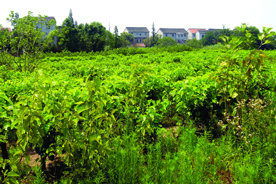

嘉兴市文物保护网 · 市级文物保护单位 · 2014-06-11 · 原文

钟家港遗址位于嘉兴市秀洲区王店镇四联村9组，东侧为南湖大道，南侧为钟家港，并有一片民房，西侧为村道，北侧为桑树地、油菜地。遗址呈梯形，占地面积约20000平方米，系新石器时代马家浜文化早期的聚落址。遗址地上现种有桑树，当中竖有一高压电线铁塔，中部在开挖钟家港时被破坏，开挖河面宽约10米。文化层厚约1.10米，文化类型较单纯，包含物丰富，保存尚好，发现较多陶片和大量兽骨。陶片多为夹砂红陶，也有泥质红陶，表红胎黑、素面，器型有腰沿釜、敞口盆等。钟家港遗址属马家浜文化早期，存在时间早，器物类型特殊，具有较高的历史和科学价值。1992年公布为嘉兴市级文物保护单位。